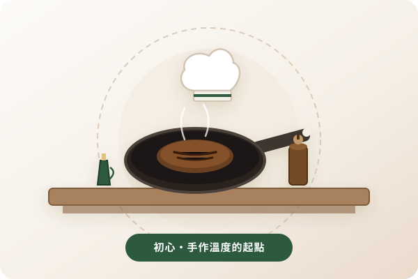
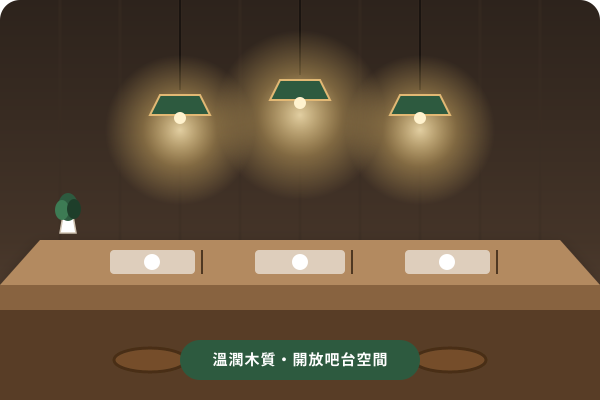

01
每日鮮絞・原肉手作
堅持使用合格安心檢驗的原塊肉品，每日在店內低溫環境現切現絞。完全不添加化學黏著劑、防腐劑與人工增稠劑，以天然洋蔥的甘甜與師傅的手勁拍打，保留扎實肉感與滿溢肉汁，只把當日最新鮮的滋味留給餐桌。

在快節奏的現代日常裡，常常為了趕時間而草草解決一頓飯。我們總在思考：是否有一種料理，能在短暫的用餐時光中，讓人徹底放鬆身心，重新找回對生活的熱情？
這份思索成為了「哈基米挽肉」的起點。我們深受傳統日式挽肉職人精神的啟發，決定回歸烹飪的本質——不求繁雜的調味遮掩，而是透過每日原肉切塊絞製、反覆手工拍打排氣，以及鐵板高溫瞬煎的精準掌握，呈現食材原本的鮮甜多汁。
看著剛起鍋的肉排在白米飯上淌下濃郁肉汁，客人臉上浮現出的舒心微笑，就是我們日復一日堅守崗位最大的動力。
我們堅持用最誠懇的心意與嚴謹的標準，對待端上桌的每一道佳餚。
堅持使用合格安心檢驗的原塊肉品，每日在店內低溫環境現切現絞。完全不添加化學黏著劑、防腐劑與人工增稠劑，以天然洋蔥的甘甜與師傅的手勁拍打，保留扎實肉感與滿溢肉汁，只把當日最新鮮的滋味留給餐桌。
一碗好飯是漢堡排的最佳靈魂伴侶。我們嚴選台灣在地具有產銷履歷的特等米，依據當季氣溫與濕度調整浸泡時間，使用羽釜專用鍋直火炊煮，煮出粒粒飽滿、香氣馥郁的晶瑩米飯。
我們重視每位客人的用餐感受。以開放式吧台設計拉近廚師與顧客的距離，在鐵板滋滋聲與香氣中，提供親切熱誠的服務，營造像回到家一樣自在、無拘束的療癒時光。
舒適恬靜的用餐環境，讓品嚐美食成為一天中最放鬆的時刻。

店內全面選用天然溫潤的實木吧台與暖色調柔和照明，營造出寧靜雅致的用餐氛圍。環繞式吧台讓您能直接欣賞主廚在烤台前專注翻烤肉排的烹飪過程，視覺、嗅覺與味覺同步獲得享受。
每個座位均貼心預留充裕間隔與置物空間，不管是個人前來獨享一段靜謐時光，或是攜伴前來放鬆聚餐，都能在此感受到自在溫馨的歸屬感。
每一塊飽滿多汁的漢堡排與晶瑩米飯，都來自開店前數小時的細心準備。
開店前在低溫環境處理當日原塊肉品，細心剔除多餘筋膜後新鮮絞製，守住肉質最純粹的彈性與鮮甜。
依當日氣溫與濕度微調浸米時間，再以羽釜鍋直火炊煮與靜置燜蒸，算準開門前剛好迎來飽滿米香。
接單後才進行最後手工拍打排氣，放上高溫鐵板瞬間鎖住肉汁，讓每份餐點都在最佳狀態送達吧台。